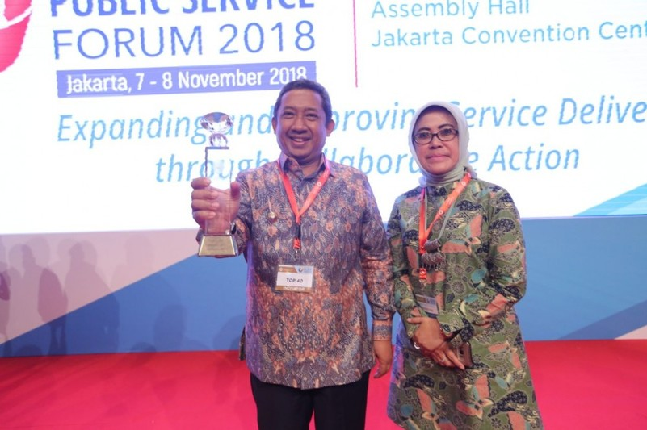

Berita Terkini

Pertama di Indonesia, Mini Lab Food Security Raih Penghargaan Top 40 Inovasi Pelayanan Publik 2018
Mini Lab Food Security yang digagas Dinas Pangan dan Pertanian (Dispangtan) Kota Bandung meraih penghargaan Top 40 Inovasi Pelayanan Publik 2018 dari Kementerian Pendayagunaan Aparatur Negara dan Reformasi Birokrasi (Kemenpan RB).
Penghargaan diserahkan oleh Wakil Presiden RI, Jusuf Kalla kepada Wakil Wali Kota Bandung, Yana Mulyana pada acara The International Public Service Forum 2018, di Jakarta, Rabu (7/11/18).
Mini Lab Food Security merupakan laboratorium untuk memeriksa keamanan dan kelayakan makanan. Inovasi ini merupakan yang pertama di Indonesia.
Warga bisa memanfaatkan laboratorium ini untuk menguji keamanan dan kelayakan makanan yang bakal dikonsumsi. Saat ini Kota Bandung baru memiliki satu unit kendaraan laboratorium keliling. Rencananya, Pemkot Bandung akan menambah lagi unit lab keliling tersebut.
Kepala Dispangtan Kota Bandung, Elly Wasliah mengatakan, Mini Lab Food Security untuk melayani 69 pasar modern dan 33 pasar tradisional yang ada di Kota Bandung.
"Ini memang sangat membantu para petugas untuk memastikan keamanan makanan yang akan dikonsumsi warga. Dengan 'rapid test', petugas hanya membutuhkan waktu satu menit untuk memastikan daging sapi tidak tercampur dengan daging celeng. Padahal biasanya memerlukan waktu 3 sampai 7 hari," jelas Elly.
Menurut Elly, konsumen perlu mengetahui keamanan pangan. Terlebih di pasaran, banyak bahan pangan yang mengandung zat kimia berbahaya.
"Untuk menjaga keamanan masyarakat Kota Bandung, Mini Lab Security akan menguji dan memeriksa pangan segar yang dijual atau diedarkan. Baik di pasar tradisional maupun pasar modern dan distributor ataupun di agen," jelasnya.
Keberadaan Mini Lab Food Security akan membuat masyarakat lebih tenang dalam memilih pangan untuk dikonsumsi. Dengan waktu yang sangat singkat, konsumen bisa mengetahui kandungan yang ada di dalam bahan makanan.
Sementara itu, Wakil Wali Kota Bandung, Yana Mulyana usia menerima penghargaan mengatakan, penghargaan yang diraih Dispangtan bisa semakin memotivasi dinas-dinas lainnya untuk terus berinovasi.
"Dengan inovasi, masyarakat semakin terlayani dengan mudah, efektif dan efisien," tuturnya.
Terkait dengan Mini Lab Food Security, Yana berharap Dispangtan Kota Bandung bisa terus mengembangkannya sehingga lab tersebut bisa menguji semakin banyak jenis dan produk makanan.
"Jika saat ini baru bisa menguji tujuh jenis produk makanan segar, mudah-mudahan ke depannya bisa lebih banyak lagi," tuturnya.